ZINZINHEDO Mahoukpégo Luc
Biostatisticien passionné par les questions agricoles, environnementales et climatiques, je développe des modèles statistiques et d'apprentissage automatique pour mieux comprendre et anticiper les dynamiques qui menacent la sécurité alimentaire et les ressources naturelles en Afrique. Profondément attaché aux projets de développement durable, je crois que la donnée, rigoureusement analysée, est l'un des leviers les plus puissants pour bâtir des sociétés résilientes face au changement climatique.
Expérience professionnelle
Assistant de Recherche (Ph.D) au LABEF/UAC (En cours)
Analyse et développement des modèles mathématiques pour une agriculture intelligente au Bénin.
- Analyse et Modélisation Spatiales des pathogènes culturales
- Prédiction de rendement agricole
- Modélisation de la distribution des espèces
- Apprentissage automatique
- Rédaction scientifique
Analyste de données — Indépendant
- Traitement et analyse statistique de données
- Programmation R et simulation de données
- Planification de dispositifs expérimentaux
- Digitalisation de formulaires et organisation de la collecte
- Interprétation des résultats et rédaction de rapports
Membre Fondateur
Promotion de l'agroécologie et de la résilience climatique des communautés rurales en Afrique.
Distinctions et bourses
Formation académique
Doctorat en Biométrie (PhD)
Sujet : Prédiction des rendements agricoles sous l'effet du changement climatique et de la propagation des pathogènes des cultures — approches par machine learning et modélisation spatiale.
Master en Biostatistiques
Licence en Sciences Agronomiques et de l'Eau
École d'été en Adaptation au Changement Climatique
Communication scientifique et Réseautage
Rédaction scientifique
Rédaction scientifique avancée
Conférences et séminaires
5th African Symposium on Big Data, Analytics & Machine Intelligence
Thème : Robustness of Machine Learning Regression Algorithms to Data Imperfections and Pre-processing in Agricultural Yield Prediction
Conférence entre jeunes sur l'intelligence artificielle
Thème : Pour une intelligence artificielle éthique : quel repère pour l'Afrique de demain ?
Benin Workshop on Artificial Intelligence — BWAI
Thème : Prédiction du rendement des racines et tubercules à l'aide de l'apprentissage automatique : une revue systématique et critique
Artificial Intelligence in Health, Agriculture and Environment in Africa: achievements, challenges, and perspectives
Séminaire scientifique, Intelligence Artificielle & Agriculture de Précision
Thème : Approche combinée d'apprentissage automatique et de modèles spatio-temporels pour la prédiction du rendement du manioc (Manihot esculenta C.) au Bénin sous conditions d'infestation pathogénique
Conférence Internationale useR!
Mes attestations
Attestations et certificats obtenus au fil de mes formations
Œuvres scientifiques
Evaluating spatial resolution and imperfect detection effects on the predictive performance of inhomogeneous spatial point process models trained with simulated presence-only data.
Sensitivity of machine learning regression models to data structure and quality in crop yield prediction.
Roots and tubers yield prediction using machine learning: a systematic and critical review.
Predicting agricultural yields under climate change in Benin: A comparative assessment of machine learning regression algorithms.
Compétences numériques
Français
Langue officielleAnglais
IntermédiaireGalerie
Terrain, conférences, remises d'attestation
Quelques instants marquants
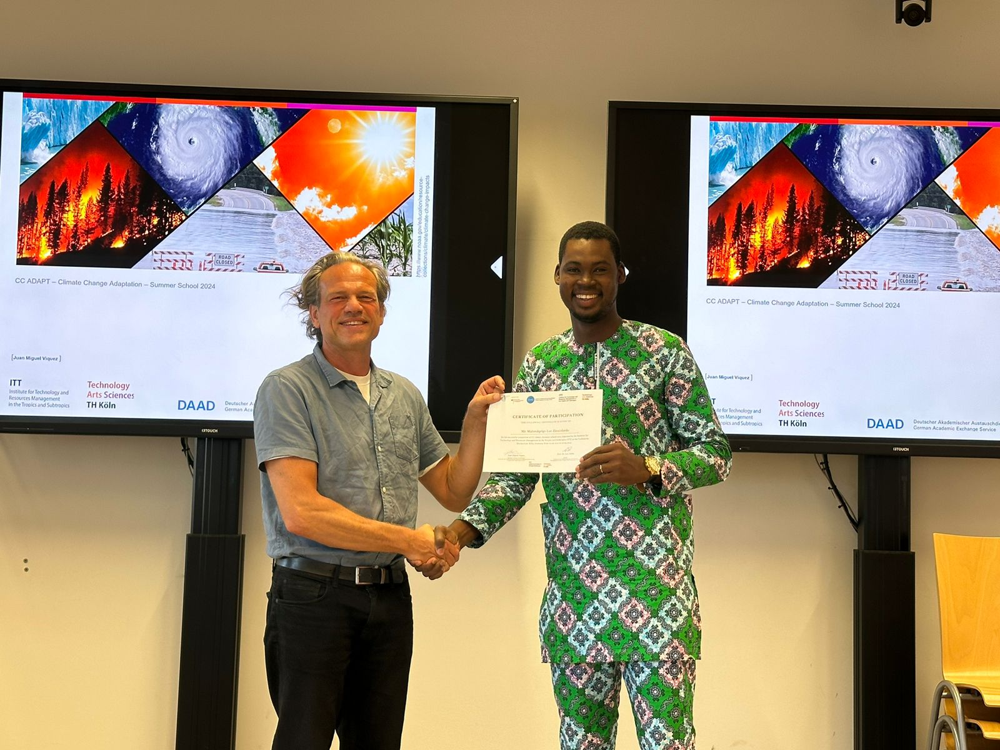
gallery-1.jpg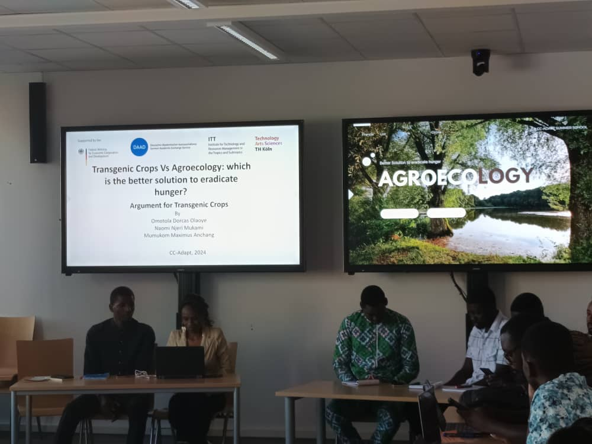
gallery-2.jpg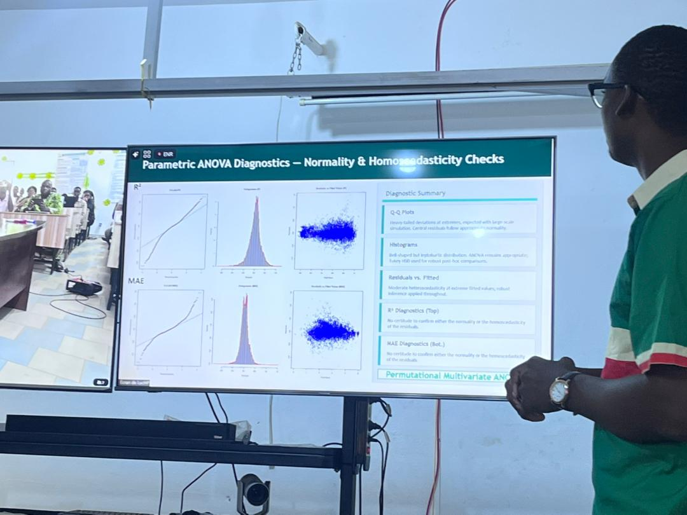
gallery-3.jpg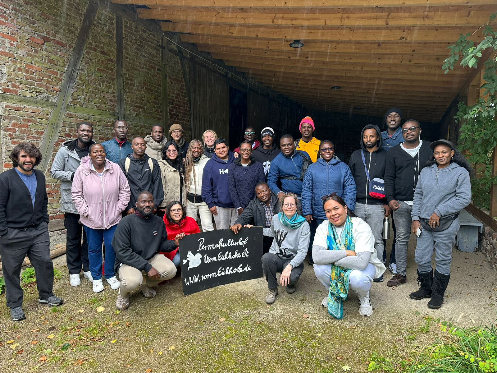
gallery-4.jpg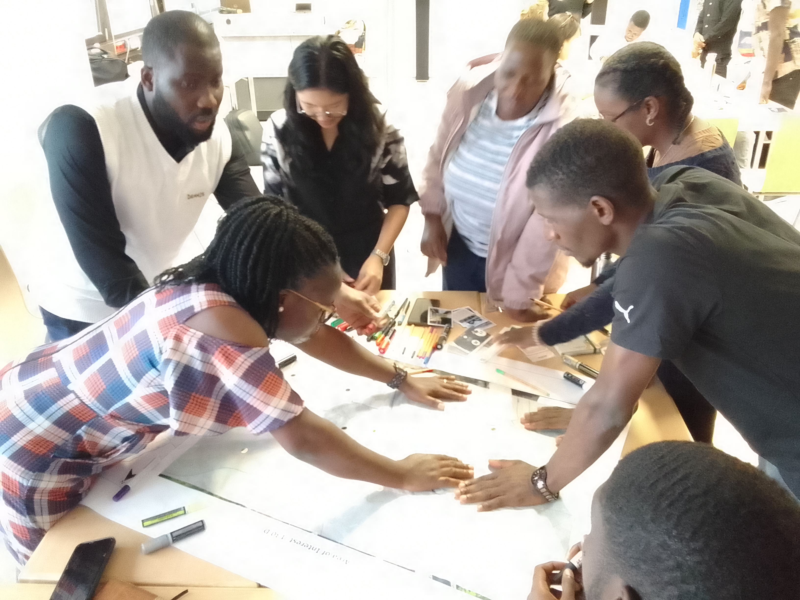
gallery-5.jpg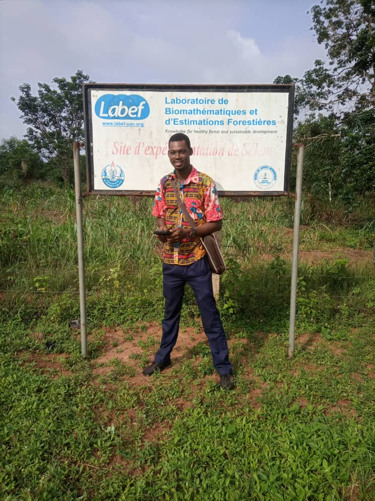
gallery-1.jpg gallery-2.jpg
gallery-2.jpg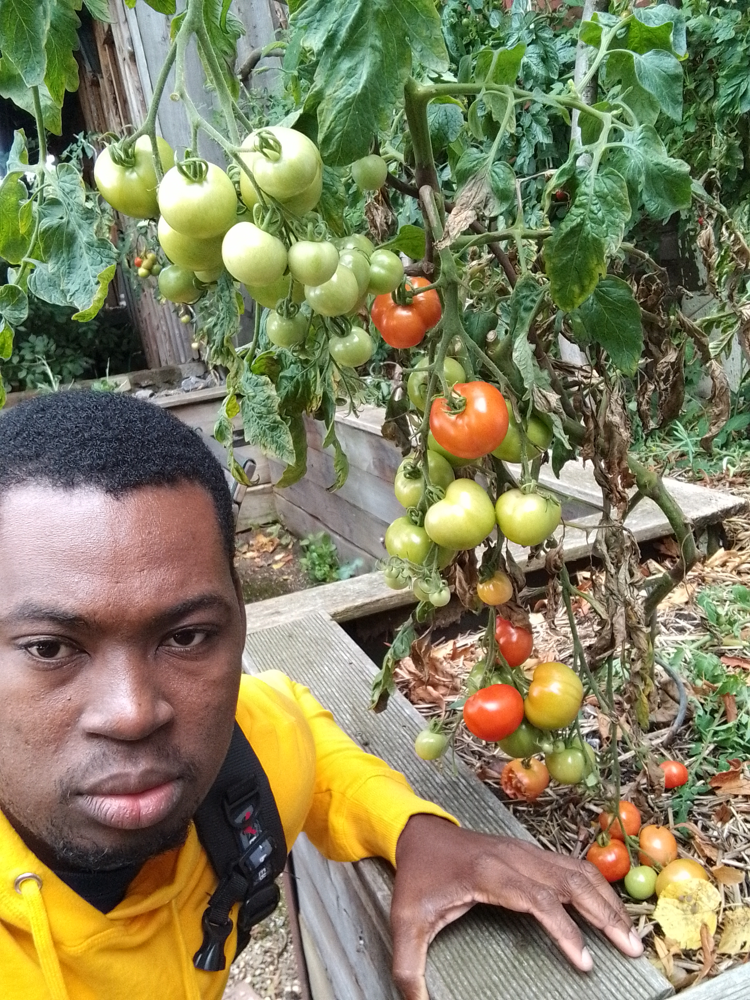
gallery-3.jpg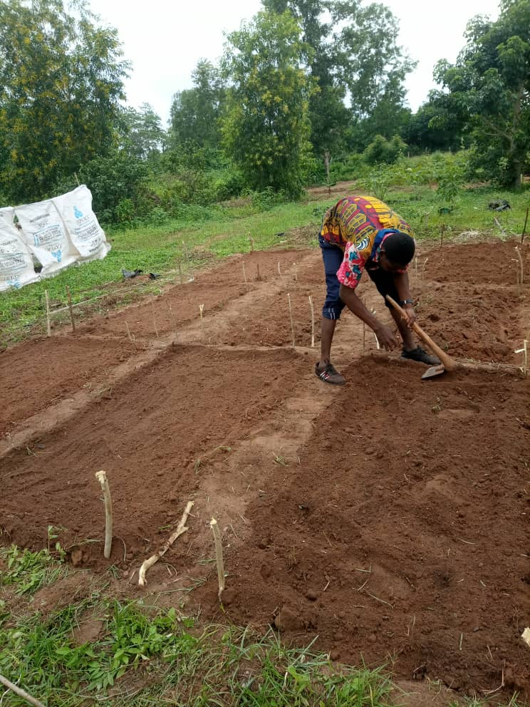
gallery-6.jpg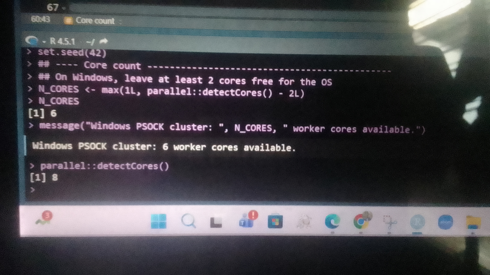
gallery-5.jpg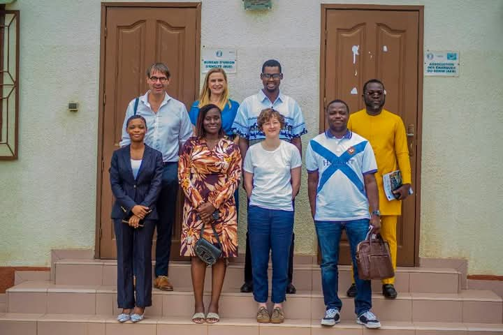
gallery-5.jpg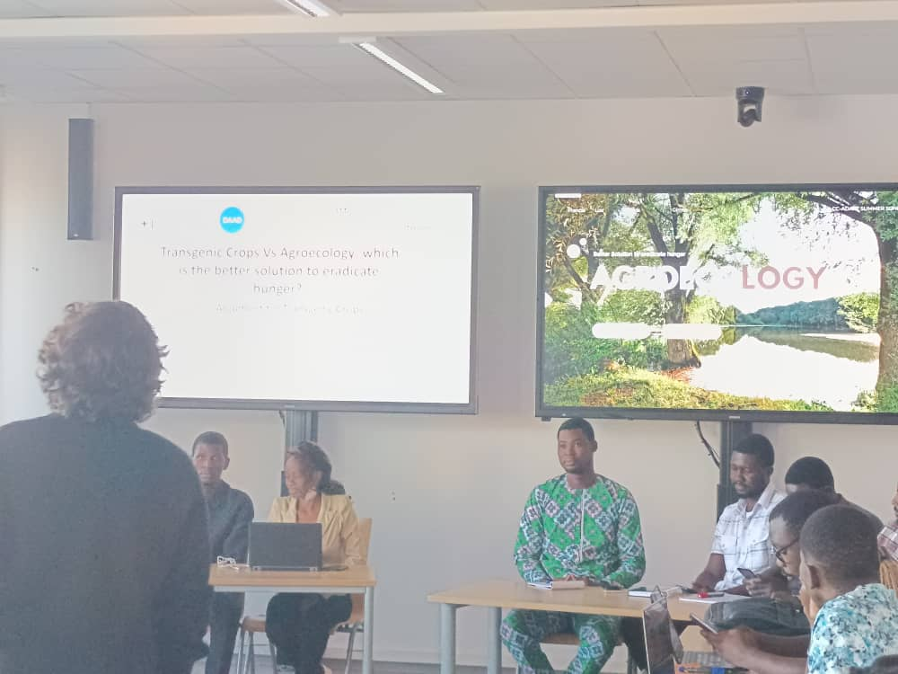
gallery-5.jpg